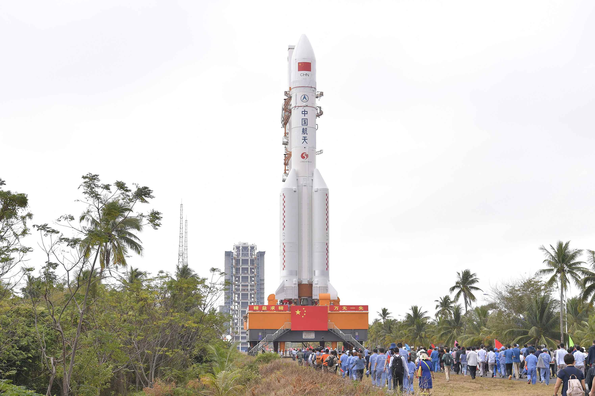

Тяжёлый носитель — Long March 5 (Китай)
- Грузоподъёмность: ~25 тонн на НОО.
- Почему лучший:
- Главная китайская ракета для освоения Луны и межпланетных миссий.
- Уже выводила лунный аппарат «Чанъэ-5» и марсианскую миссию «Тяньвэнь-1».
- Хороший баланс между грузоподъёмностью и надёжностью.
- Гипотетическая роль: «космический грузовик», основной транспорт между Землёй, орбитой и Лунной базой.